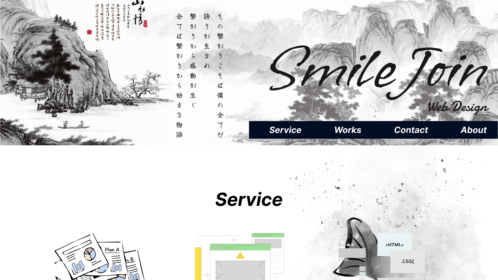
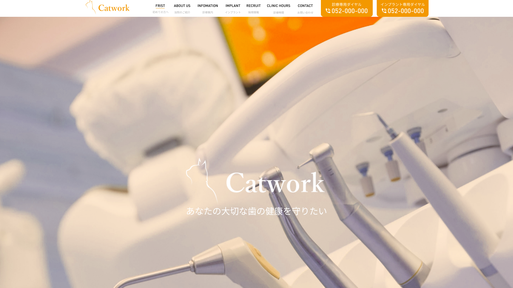
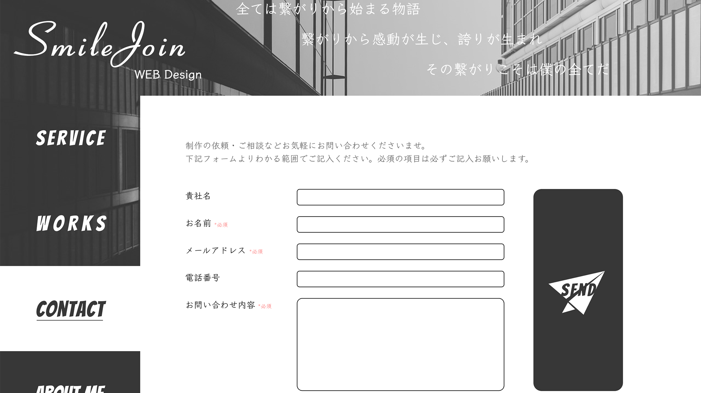
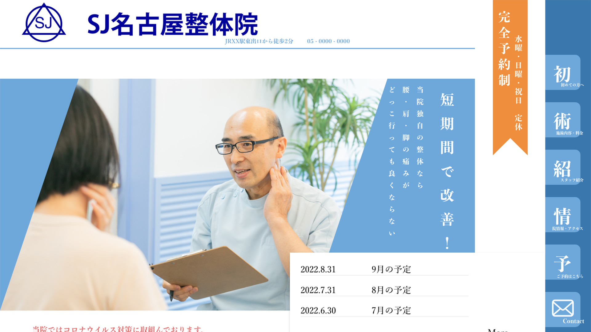
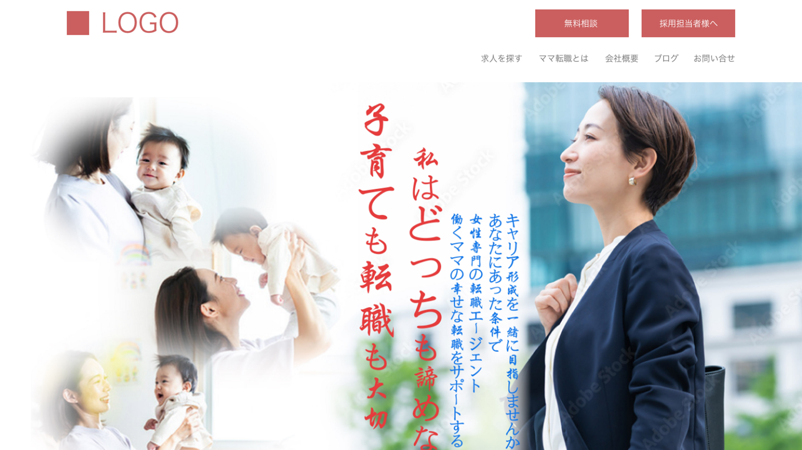
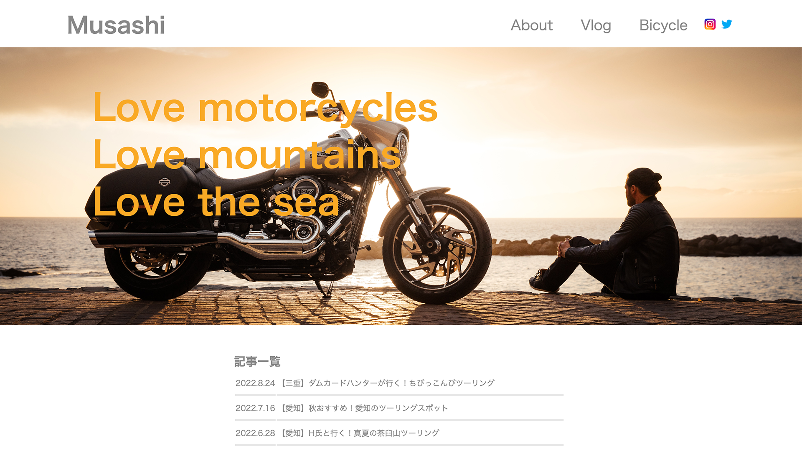
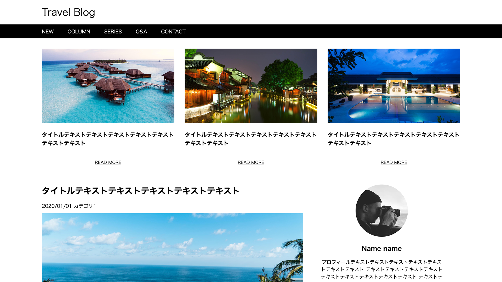

- 名前： 董 展志(Sanji To)
- 年齢： 27歳
- 出身地： 中国黒竜江省
- 居住地： 日本愛知県
-
趣味：
車＆バイク、カスタム
映画、小説、漫画
お洒落なもの - 夢： 山暮らし
-
好きな言葉：
『あまり強い言葉使うなよ。弱く見えるぞ』
ー藍染惣右介 (BLEACH)
- 全ては繋がりから始まる物語
- 繋がりから感動が生じ
- 誇りが生まれ
- その繋がりこそは僕の全てだ
SmileJoinWeb Design
Service
- ディレクション お客様の要望をヒアリングし、現状の問題点を洗い出し、効果的なプランを作成いたします。制作ではデザインに入る前の事前の準備が特に重要になります。何が必要で何が必要でないのかを判断し、費用対効果の高いWebサイトを作るための土台を作ります。
- デザイン ヒアリングに基づいたプランに沿って、デザインを作成いたします。人の使うものであることを常に意識して、使う人が迷わない、目的を達成できるデザインを心がけています。インターフェースの重要性が増す中でデザインの役割を理解し、そのプランに最適な提案をさせていただきます。
- コーディング デザインの意図を理解し、動きや効果を適切に使用することでWebサイトの仕上がりは大きく変わります。スマートフォンサイト、ワードプレスを使用した更新性の高いサイト、Javascriptを使用した動きのあるサイトなど、様々なサイトのコーディングを行っております。
Works
-

SmileJoin WebDesign（仮） Figma / HTML,css / JavaScript / PHP / Photoshop / Illustrator / 今までの制作物ではレスポンシブ対応できない物が多いため、今回はレスポンシブ対応に力入れて制作しました。
スマートフォンからデスクトップまで全てのデバイスに対応
制作時間：30時間 -

Catworkクリニック（仮） Figma / HTML,css / JavaScript / Photoshop タブレットやスマートフォンのデザインを追加javascriptで滑らかな動きを心がけて制作しました。
制作時間：コーディング 20時間 -

SmileJoin Web Design（仮） Figma / HTML,css / JavaScript / php / Photoshop 2021 / Illustrator2022 / 制作目的：
ポートフォリオの掲示制作
誰でも見やすく、ごく簡単なレイアウトを目指しました。今自分において一番大事にしている事をまとめ、タイトルの位置に配置。訓練校通って 3ヶ月目の時期に制作しました。JavaScriptやPHPはまだ学習中のため、コンタクトフォームもへのセキュリティー対策はまだ行っていません。モバイルデバイスとデスクトップデバイスに対応
制作時間： 40時間 -

SJ名古屋整体院（仮） Adobe XD / HTML,css / JavaScript / 制作目的：新規患者獲得
ターゲット： ３０代〜５０代男女患者様
デザインイメージ：モダン 優しい 知性的 清潔
メインカラーを信頼感のある青系に設定重要情報はアクセントカラーのオレンジ系に設定。ナビーゲーションバーを固定し、いつでも問い合わせや予約が可能、またターゲット層は広く、見ずらい方もいらっしゃる可能性があるため、マウスを合わせた際にフォントサイズを見やすく大きめに設定。現段階でデスクトップバージョンとモバイルバージョンに対応。
制作時間： 60時間 -

リクルートエージェント（仮） Adobe XD / HTML,css / JavaScript / Illustrator / Photoshop / 制作目的：新規ユーザ獲得
ターゲット： ２０代後半〜３０代女性
メインカラーは大人女性の華やかさを演出しやすい濃い目の赤に設定。
アピールポイントの『子育てと転職』両立できる事をわかりやすく伝えるため真ん中に大きく配置。訓練校通って 2ヶ月突入の時期に制作しました。現段階でデスクトップバージョンとモバイルバージョンに対応
制作時間： 60時間 -

個人ブログ（仮） HTML,css 制作目的： 同じバイク乗りの繋がり増やし
ターゲット： 30代〜50代まで幅広い年齢層
訓練校でhtml習い終わったごろに制作しました。
デスクトップのみ対応
制作時間： 20時間 -

Trabel Blog（仮） HTML,css 制作目的： コーディングの練習
訓練校でhtmlの学習中に練習として制作しました。
デスクトップのみ対応
制作時間： 30時間
Contact
制作の依頼・ご相談などお気軽にお問い合わせくださいませ。
下記フォームよりわかる範囲でご記入ください。必須の項目は必ずご記入お願いします。
About
1995年 ｜
中国黒竜江省生まれ
2008年 ｜
親と来日（三重県、中学１年）
日本語０の状態で日本に来た
授業受けるどころか日常会話もできない
中学校の先生と相談したところ、名古屋の学校紹介してもらった。
2009年 ｜
名古屋に引越し
名古屋の中学校に入学したが、言葉理解できないため
友達もできず、担任先生から暴力受け、一度通学するのやめようとしていた、親に相談し
転校することに。
2010年 ｜
転校
新しい学校に転校、暇つぶしにブックオフで漫画立ち読み、偶然に同じ学校の不良と出会い、話しかけてもらった。
仲良くしてくれた。 初友。
2011年 ｜
卒業
彼のお陰でいろんな人と出会う事ができた
退屈だった学校生活も楽しいと思えるようになった。
日本語もだいぶ話せるようになった。
高校入学
中学ほとんどの時間は日本語の勉強に費やし
授業の内容がわからないまま高校受験を迎えた。
公立は受験できず、推薦で私立高校に入学。
2012年 ｜
高校中退
授業について行けず、留年の話もあったため
中退することに。
初仕事
16歳で社会人になった、目標もない、やりたい事もない
養父の会社に就職。大工助手デビュー。
2014年 ｜
退職
助手生活、結構楽しかった。
週６勤務で一日１０時間オーバーの現場仕事。
手取り１０万円だけど実家暮らしで少ないとも思わなかった。
そもそも自分はちゃんと仕事できてたかが怪しい。
退職理由：高所恐怖症。
一人暮らし
退職後運送会社の方と出会い、正社員で働いていた。
職場が遠いのもあって、一人暮らしする事にした。
当時はオンラインゲームにはまり、手取り30万前後貰ったのを生活費除いて全て課金に費やした。
2018年 ｜
焦り
派遣社員で携帯ショップの仕事をしていたごろ
ある日(突然)今後何しようかが全然わからない
このままずっと自由に生きるのもそう長くない
けど自分に何ができるかもわからない、何やりたいかもわからない。
行動
かれこれ悩んでも仕方ない、とりあえず将来的に向いてそうな求人を探しまくった。
求人ページに書かれていた『独立塾』に目を引かれ、開いた先には違う人生が待っていた。
2019年 ｜
焦り
東京まで説明会を聞きに行き、独立塾に応募して、無事に入社できた。それは今までの自分が知らない夜の世界だった。
配属の店舗行って第一印象は：おしゃれ
勤務が始まって第一印象：なんだこの人混みは、動けん、押すな
出会い
ジェンガの存在も知らなかった自分はみんなの笑い声に守られながら日々成長していた。
そして社会人になって出会いの無さに感じていた悩みも解消
むしろ色んな人に出会いすぎて名前と顔が一致しなかった。
出逢い
ここである女性に出逢い、お互いに興味を持ち、付き合うことに。
当時の彼女は大学生であり、かなり遊んでいた。
2020年 ｜
退職
1年間の独立塾を終え、卒業。
出店
独立塾で得た知識フル活用して、自分で店舗立ち上げ(極小さな)
しかしタイミングよくコロナが流行る時期だった。
開店２ヶ月目で緊急事態宣言によって営業停止。
それに人脈などもなく、知名度もない状態で開店し、この店の存在はもはや身内の人しか知らなかった。
かれこれ試して半年後あたりにようやく来客が増え、満席になる事も徐々に増えていた。
2021年 ｜
結婚
会社員の時に出会った彼女と結婚、ほんとはもっと仕事などが安定してからにするつもりだったが
予定は変化に及ばないものだ。
再び、出店
『１店舗目まぁまぁ成功したから、２店舗目も行けるでしょう』
そういう軽い気持ちで２店舗目立ち上げ。
案の定上手くいかなかった、コロナの影響もあったが、やはり自分自身の力が足りない事に気づき、７ヶ月目で閉店。
独学
コロナがあまりにも落ち着かず、営業できない日も多々あったので、趣味程度でプログラミングを独学し始めた。
それが思うより刺さって、夢中になっていた
初めて勉強というものが楽しいと思えた。
2022年 ｜
閉店 コロナで２年目の半分は、ほぼまともに営業できなかった。第七波突入の時期に閉店と決意。
現在 ｜
Web
コロナ中に独学した経験もあり、web業界の方が自分に合うと思い、職業訓練校のwebデザイナー科に入学。
ほんとに未経験者によくない業界だ。
けど、頑張りがすぐに実感できる業種でもあると思う
だから自分は挫折しなかったと思う。
夢の中でレイアウト組んでコード叩いてるくらいだから
多分好きだと思う。